Мощность и запаспод задачу
Подберём накопитель для пиков нагрузки и нужного времени резерва.
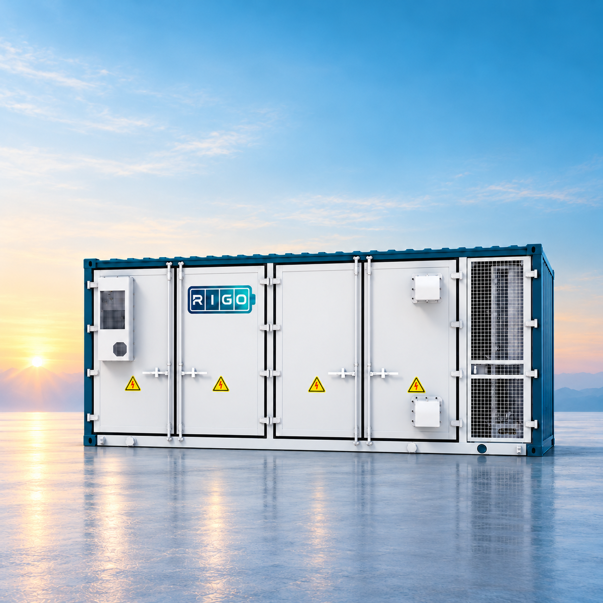
Подберём накопитель для пиков нагрузки и нужного времени резерва.
Проверим, оправдает ли накопитель затраты на вашем объекте.
Согласуем работу накопителя с сетью, солнечной станцией и генератором.
Проверим работу на оборудовании объекта перед передачей системы.
Задачи бизнеса
Начинаем с ограничения, которое нужно снять.
Затем проверяем, подходит ли для этого накопитель.
Новая линия, оборудование или зарядные сессии кратковременно перегружают ввод.
Перезапуск процесса, риск брака или порчи продукции обходятся дорого.
Пики потребления, дорогие часы и несовпадение выработки СЭС с нагрузкой.
Сценарии применения · вариант 2
Наведите на сценарий или нажмите, чтобы посмотреть решение.
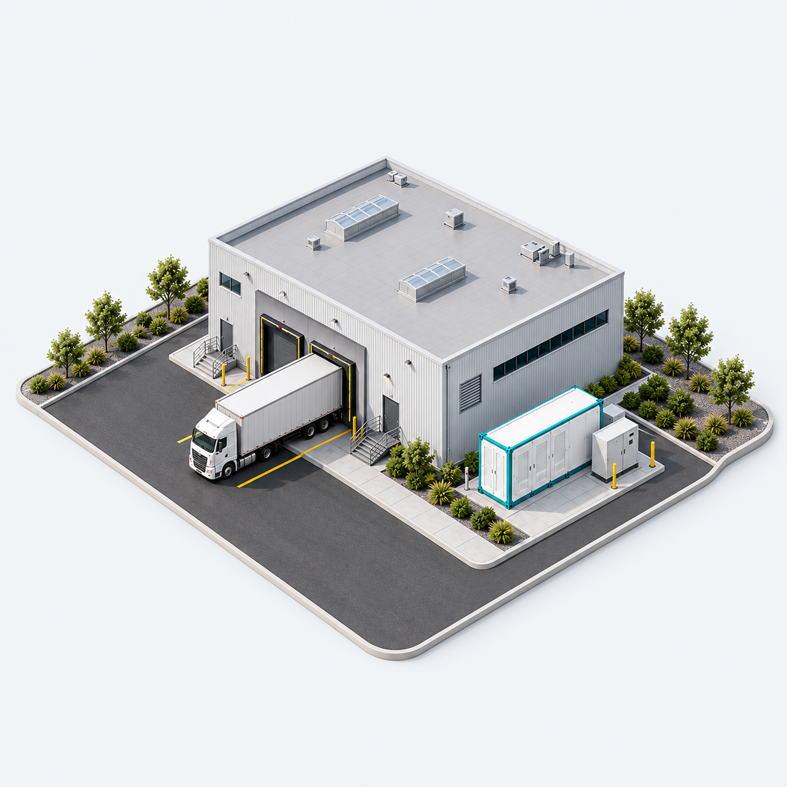
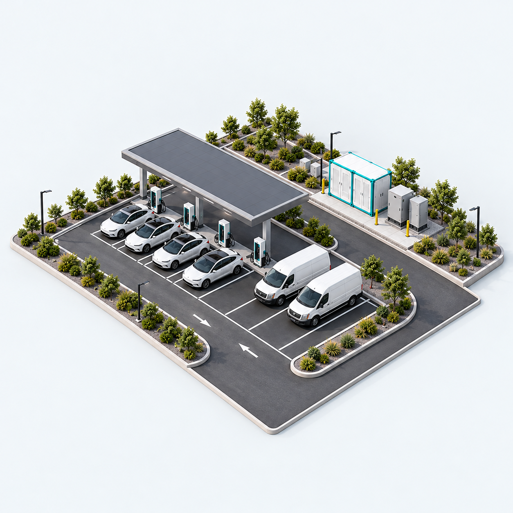
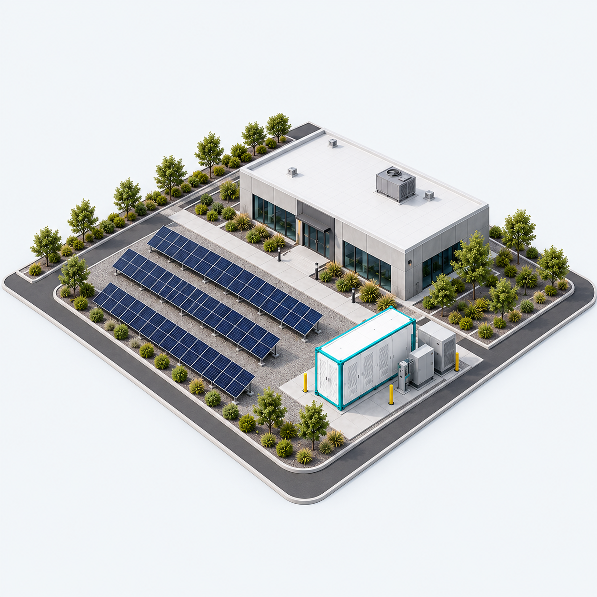
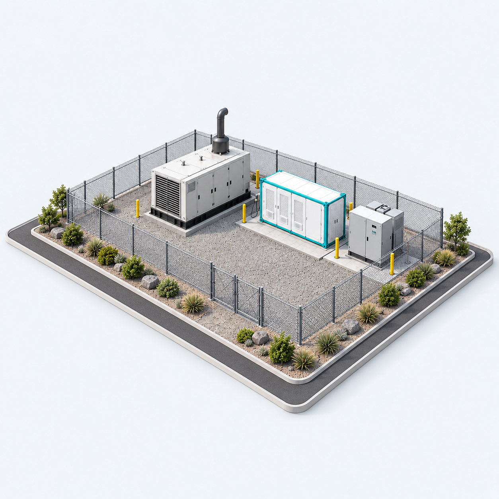
Каталог решений
Выберите тип оборудования.
Конфигурацию подберём по мощности, запасу энергии и задаче объекта.
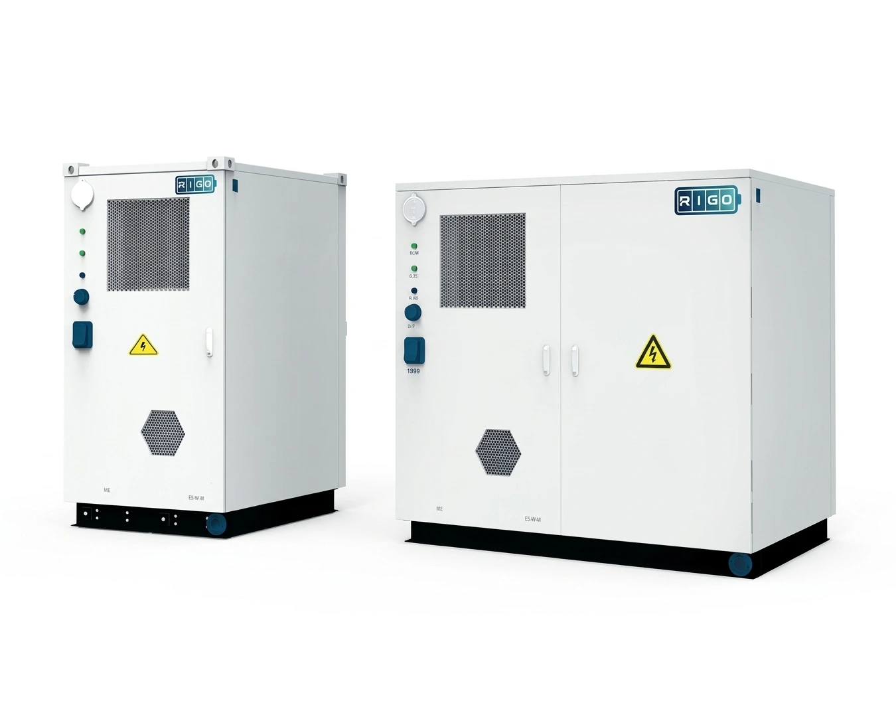
↗Power M
Для отдельных нагрузок и небольших площадокКомпактный формат для предприятия, склада или зарядной площадки. Рассматривается для покрытия коротких пиков, хранения солнечной энергии и резерва выбранных нагрузок — при соответствующей схеме подключения.
 ↗
↗Power X · Centralized
Для крупных нагрузок и запаса энергии на уровне МВт·чКонтейнерный формат для промышленных площадок и энергетических объектов. Позволяет организовать накопление и выдачу больших объёмов энергии. Централизованная архитектура и жидкостное охлаждение; режим работы определяется проектом.
 ↗
↗Power X · String-type
Для крупных систем со стринговой архитектуройВариант для промышленности и объектов генерации, где проект предусматривает разделение батарейной системы на отдельные группы — стринги. Применяется для переноса потребления во времени и покрытия пиков. Схему преобразования и управления уточняем при подборе.
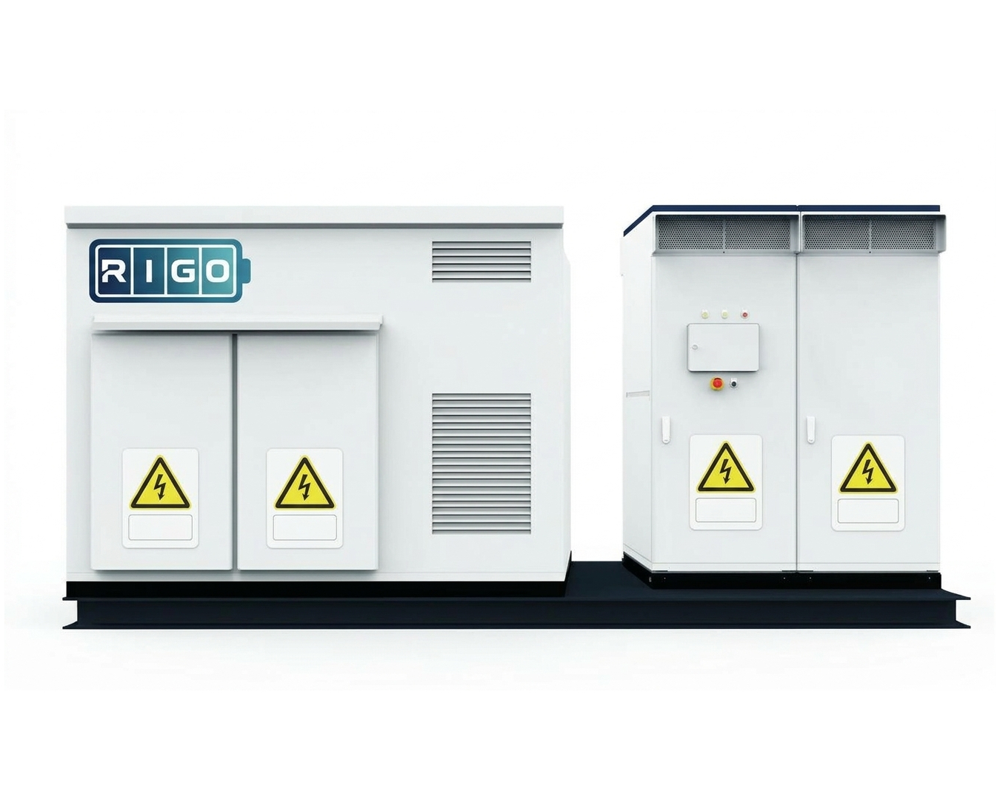
↗Power X · Immersion
Для проектов с иммерсионным охлаждением батарейКонтейнерное решение для крупных накопителей, где выбран отвод тепла через погружение батарейных компонентов в специальную диэлектрическую жидкость. Задачи — хранение энергии и поддержка нагрузки; выбор этого исполнения зависит от требований к охлаждению и обслуживанию.
Устройство площадки
Батареи — лишь часть системы. Для работы комплекса нужны преобразователи, распределительные устройства, защиты и вспомогательное оборудование.
Нажмите на лупу, чтобы узнать, за что отвечает каждый элемент.
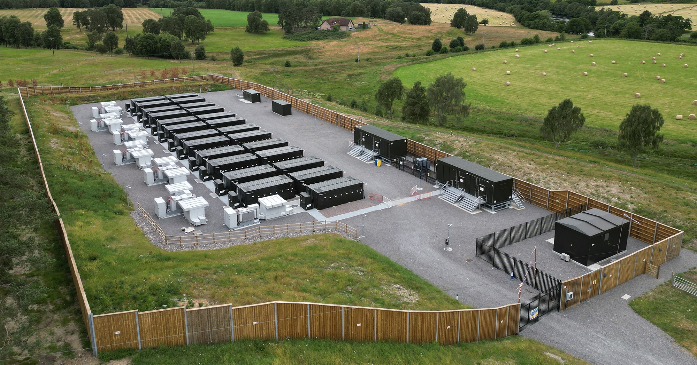
Запас энергии, контроль состояния ячеек и ограничения работы батареи.
PCS связывает батарею с AC-системой и управляет зарядом и разрядом.
Согласованные приоритеты, расписания, измерения и обмен данными.
Охлаждение, электрические защиты и противопожарные решения по комплектации и проекту.
Инженерный подход
Накопитель должен решать конкретную задачу. Поэтому сначала — исходные данные и расчёт, затем — выбор оборудования.
Начать с задачи ↗Профиль нагрузки, доступный ввод, длительность пиков и условия площадки.
Режим использования, потери, затраты и альтернативы без накопителя.
Какие нагрузки поддерживаем, на какое время и как проверяем работу системы.
Гибридная энергосистема
Объединяем сеть, собственную генерацию и накопитель под задачи объекта.
Накопитель
Батарея хранит энергию, а двунаправленный преобразователь обеспечивает заряд и разряд. Накопитель может покрывать короткие пики и поддерживать выбранные нагрузки; доступные режимы определяются проектом.
Мощность отвечает за нагрузку, запас энергии — за длительность её поддержки.
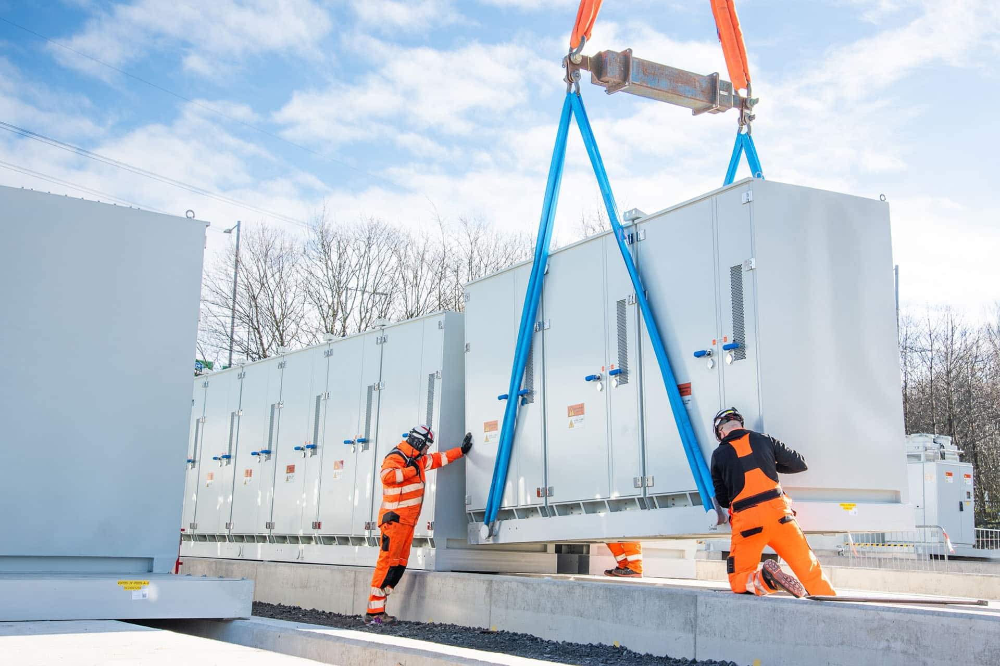
Проектирование · поставка · запуск
Закупка шкафа или контейнера — только часть проекта. До поставки нужно согласовать размещение, подключение и границы ответственности.
Как строится проект
Фиксируем ограничения и ожидаемый результат. Собираем профиль потребления.
Определяем параметры, режимы и схему подключения. Проверяем экономику.
Согласуем оборудование, состав работ, документацию и условия поставки.
Проверяем согласованные режимы. Передаём документацию по эксплуатации.
Что согласовываем до заказа
Фиксируем не только оборудование, но и условия, в которых оно должно решать вашу задачу.
Мощность, полезный запас энергии, нагрузка, резерв заряда и ограничения. Для экономической задачи — расчёт эффекта и сравнение альтернатив.
Что встроено в систему, какое оборудование требуется снаружи, кто готовит площадку и выполняет подключение.
Какие режимы проверяем, где измеряем результат и какие условия считаем успешной приёмкой.
Гарантийные границы, ответственные за сервис, доступ к мониторингу, регламент обслуживания и необходимые запасные части согласовываются отдельно для выбранной системы.
Как это выглядит на площадке
Накопители на промышленных и коммерческих объектах: шкафные системы рядом со зданием и контейнерные комплексы на открытых площадках.
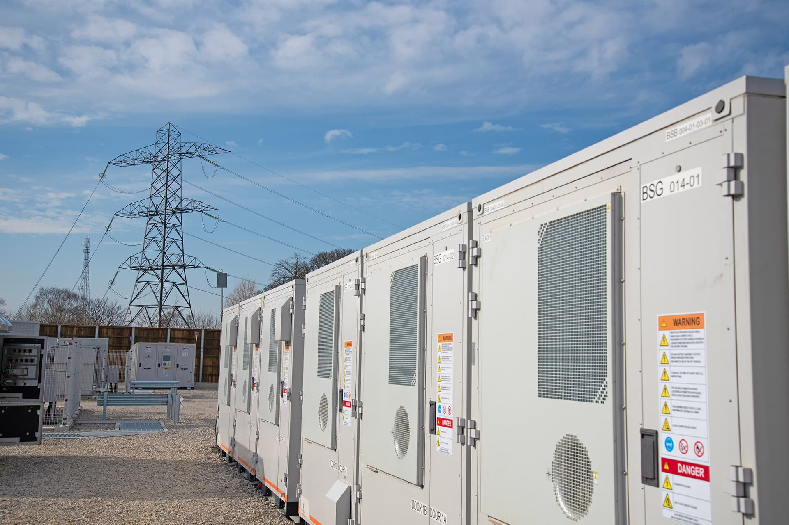
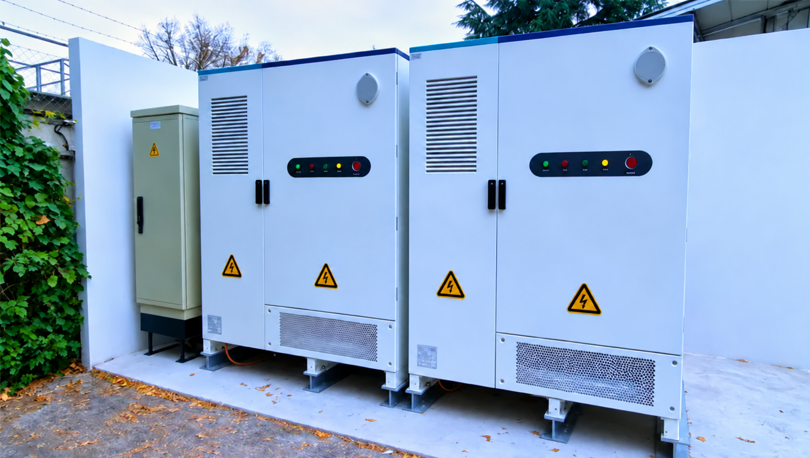
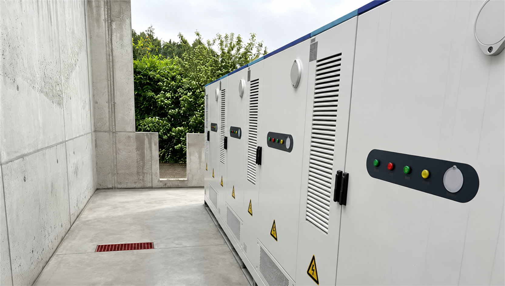
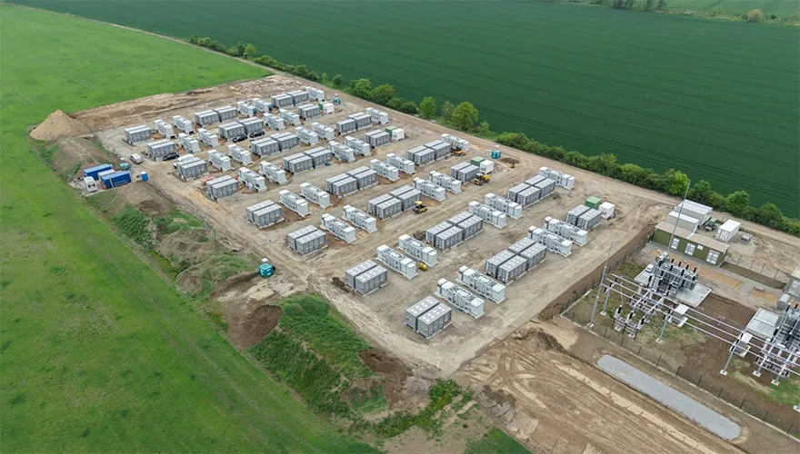
Для этого предусматриваем резервное питание от накопителя. Подбираем систему под оборудование, которое нужно сохранить в работе, необходимое время автономности и допустимый перерыв питания. Если остановка недопустима, отдельно прорабатываем бесперебойное переключение.
Это зависит от нагрузки, полезной энергии, резерва заряда, потерь, температуры и состояния батареи. Номинальные кВт·ч сами по себе не гарантируют время поддержки.
Её считают по профилю потребления и условиям оплаты с учётом потерь, деградации и стоимости системы. Для некоторых объектов накопитель может оказаться экономически нецелесообразным.
Тип объекта, регион, основную задачу и известные параметры нагрузки. Если есть — график потребления, однолинейную схему и данные по СЭС или генератору.
Нужно разделять само оборудование, внешние устройства подключения, проектирование, подготовку площадки, логистику и пусконаладку. Итоговый состав фиксируется в спецификации и границах работ.
Да, если общий график работы и запас заряда это позволяют. Энергию, выделенную в обязательный резерв, нельзя одновременно полностью использовать для другой задачи.
Климат, доступ для обслуживания, условия площадки, электрическая и пожарная безопасность. Требования проверяются по выбранному оборудованию и проекту; уличное исполнение само по себе не означает работу при любой температуре.
Проверяют календарный срок, допустимые режимы и наработку, остаточную ёмкость, условия обслуживания и исключения. Ресурс ячеек и гарантия всей системы — разные показатели.
Начнём с вашего объекта
Не обязательно знать ёмкость батареи.
Достаточно описать ситуацию.